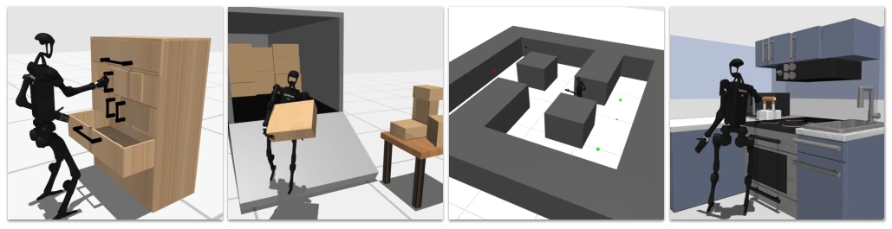
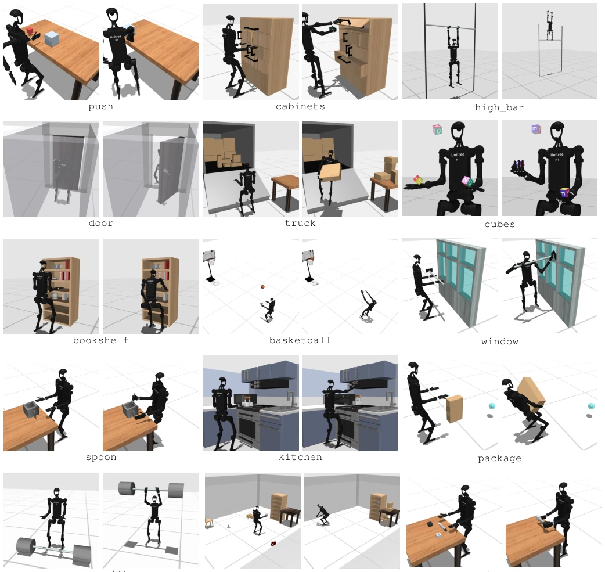
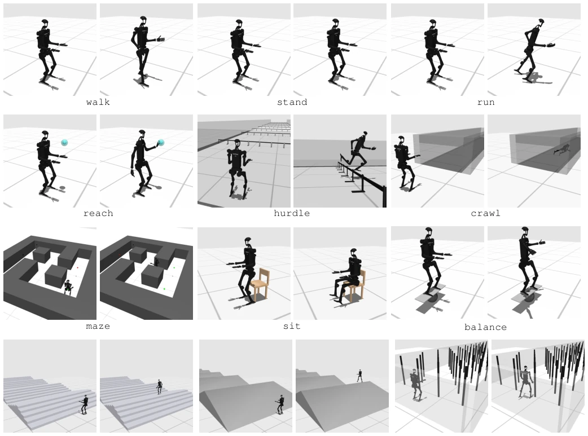
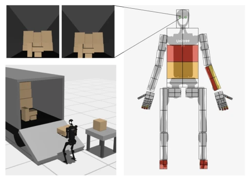
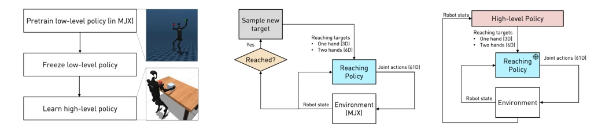
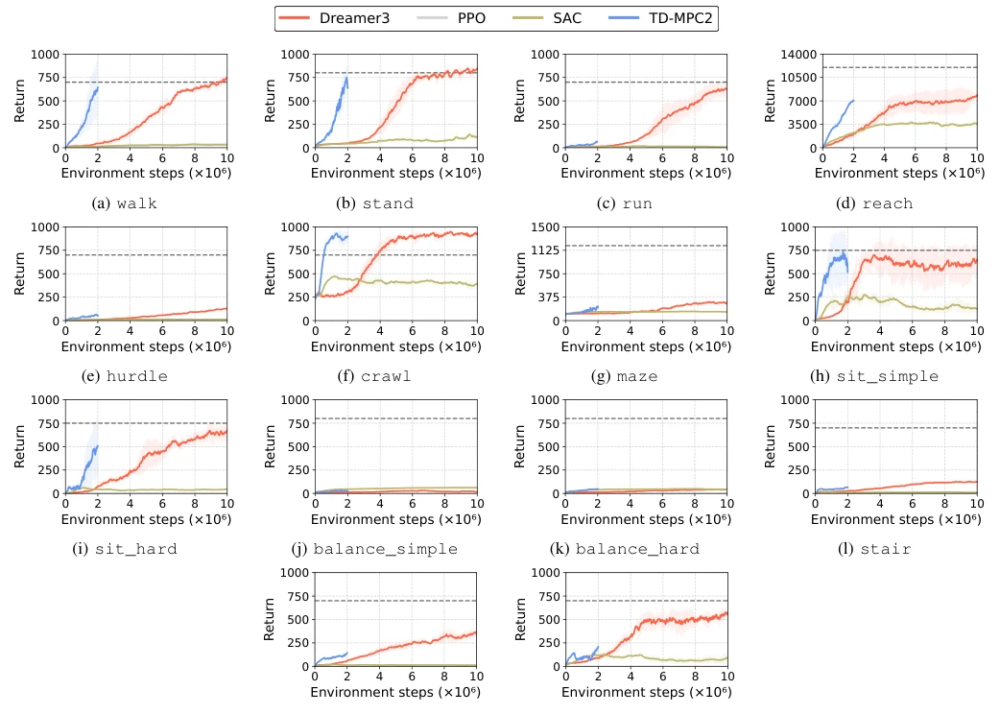
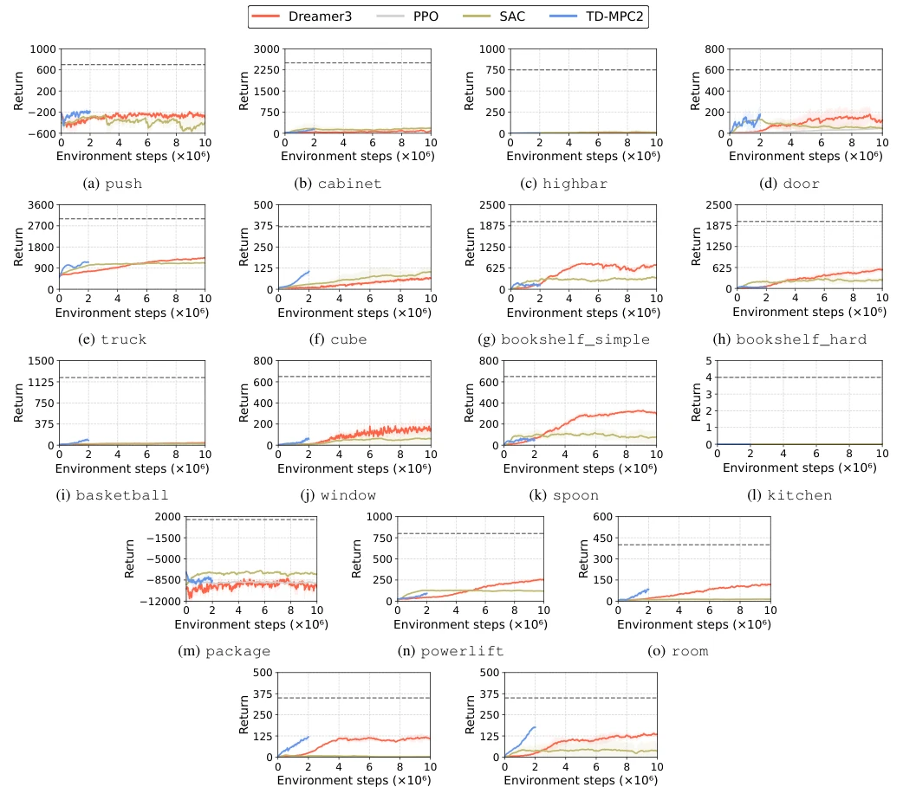
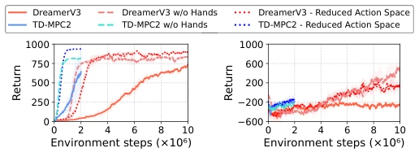
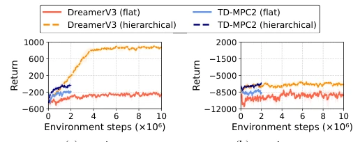
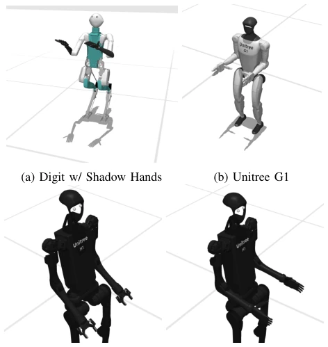

This paper poured cold water on the embodied AI community while also handing them a ladder. HumanoidBench indeed fills the gap in benchmarks for humanoid robot whole-body control. The configuration of Unitree H1 plus Shadow Hands is quite impressive, with 27 tasks covering everything from walking to moving bricks. But do not celebrate too early; SOTA RL algorithms (DreamerV3, PPO, etc.) simply fail to learn on most tasks, unable to even master simple walking, let alone long-horizon planning. The authors finally resort to Hierarchical Reinforcement Learning (HRL), but this essentially trades 'pre-trained low-level skills' for success, equivalent to merely decomposing the problem. Although the simulation environment uses MuJoCo, it is still far from the real world, and tactile and visual data are present but not deeply explored. Overall, this is a good 'touchstone', proving the limitations of current end-to-end RL on humanoid robots, but it is still far from 'general-purpose robots'.
Bringing humanoid robots into homes is a vision, but hardware is too expensive and fragile, hindering algorithmic research [1, 11]. Existing simulation benchmarks are mostly limited to single-arm manipulation [8, 10] or pure locomotion control [3, 58], lacking complex tasks involving whole-body coordination (Locomotion + Manipulation). For example, FurnitureSim [22] involves long-horizon tasks but focuses on furniture assembly, while LocoMujoco [3] focuses only on locomotion. HumanoidBench aims to provide a low-cost, high-dimensional testbed to address whole-body control challenges under complex dynamics, especially the coordination between dexterous hands and legs. Existing work often simplifies robot morphology, ignoring the complexity of real hardware, leading to algorithms performing well in simulation but failing to transfer.

Fig. 1: Humanoid robots equipped with dexterous hands hold immense promise for integration into real-world human environments. Nonetheless, harnessing the full potential of humanoid robots presents numerous challenges, such as the intricate control of robots with complex dynamics, sophisticated coordination among various body parts, and addressing long-horizon complex tasks envisioned for these robots. We present HumanoidBench, a simulated humanoid robot benchmark consisting of 15 whole-body manipulation and 12 locomotion tasks, such as shelf rearrangement, package unloading, and maze navigation.

Fig. 3: HumanoidBench manipulation task suite. We devise 15 benchmarking whole-body manipulation tasks that cover a wide variety of interactions and difficulties. This figure illustrates an initial state for each task (left) and examples of the robot performing such tasks (right).

Fig. 4: HumanoidBench locomotion task suite. We devise 12 benchmarking locomotion tasks that cover a wide variety of interactions and difficulties. This figure illustrates an initial state for each task (left) and examples of the robot performing such tasks (right).
Built overall based on MuJoCo, the main body is a Unitree H1 humanoid robot equipped with two Shadow dexterous hands, with an action space up to 61 dimensions. Tasks are divided into 15 whole-body manipulation tasks (e.g., pushing boxes, unloading) and 12 locomotion tasks (e.g., climbing stairs, navigating mazes). Benchmark tests compared SOTA RL algorithms such as DreamerV3, TD-MPC2. Addressing the end-to-end RL failure issue, a hierarchical architecture is proposed: low-level skills (e.g., single/double-hand reaching) are first pre-trained in a simplified environment using PPO (leveraging MJX acceleration, 32k parallel environments), the high-level policy freezes low-level weights and trains only high-level decisions. This design decomposes long-horizon planning into low-level skill calls, alleviating the difficulty of exploring high-dimensional action spaces. The observation space includes proprioception, vision, and whole-body tactile, but experiments are mainly based on state observation. Force perturbations are applied during the pre-training phase to enhance robustness, ensuring the low-level policy can still execute stably while the high-level policy explores.

Fig. 2: Example egocentric visual (top-left) and whole-body tactile (right) observations when the humanoid interacts with a package in the truck environment. In the right figure, the two cameras on the robot head are highlighted in green, while continuous tactile pressure readings are indicated in shades of red (strong pressure) and yellow (mild pressure). Note that for ease of visualization, we are not showing shear forces and tactile readings on the back of the robot, which are also implemented in our environment.

Fig. 8: Our hierarchical RL pipeline (a). (b) A robust low-level reaching policy is pretrained using PPO in a MuJoCo MJX-based reaching environment, as shown in the top snapshot in (a). (c) The high-level policy then leverages the pretrained reaching policy to move to a desired position and learns to solve a downstream task, shown in the bottom snapshot in (a). Note that the reaching policy weights are frozen during the high-level policy training.
Four RL algorithms were tested on 27 tasks. Results show that in the vast majority of tasks, SOTA algorithm returns are far below the success threshold, especially long-horizon planning tasks (e.g., highbar, door). Ablation studies indicate that the high-dimensional action space brought by dexterous hands (61D vs 19D) is the main cause of performance degradation. Hierarchical RL significantly outperforms flat policies on push tasks, but still has limitations on package tasks (cannot learn lifting). Common failures include the robot conservatively maintaining contact rather than executing actions (highbar), or failing to coordinate whole-body motion (door). Tactile and visual observations are implemented but not fully benchmarked in main RL results, multi-modal perception can be explored in the future.

Fig. 5: Learning curves of RL algorithms (locomotion). The curves are averaged over three random seeds and the shaded regions represent the standard deviation. Returns are computed by summing the rewards at all timesteps of an episode. The dashed lines qualitatively indicate task success. We run PPO on the walk task but it is not visible in the plot since it only achieves very low returns.

Fig. 6: Learning curves of RL algorithms (manipulation). The curves are averaged over three random seeds and the shaded regions represent the standard deviation. The dashed lines qualitatively indicate task success. Note that kitchen is the only environment with a purely discrete, sparse reward, with a maximum of 4.

Fig. 7: Performance with and without dexterous hands. The curves are averaged over three random seeds and the shaded regions represent the standard deviation.

Fig. 9: Comparison between flat policies and hierarchical policies. The curves are averaged over three random seeds and the shaded regions represent the standard deviation.
其他图片Other Figures

Fig. 11: Additional configurations available in HumanoidBench.